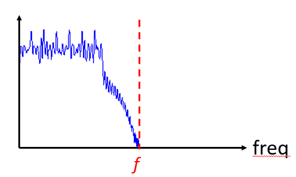
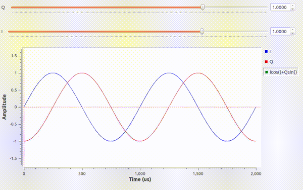

3. IQ Sampling¶
In this chapter we introduce a concept called IQ Sampling, a.k.a. complex sampling or quadrature sampling. This is the form of sampling that an SDR performs, as well as many digital receivers (and transmitters) in general. It’s just a slightly more complex version of regular digital sampling (pun intended).
Sampling Basics¶
We will first talk about sampling in general, before jumping into IQ sampling.
Whether we are dealing with audio or RF signals, we must sample if we want to capture and process or save a signal digitally. Sampling might seem straightforward, but there is a lot to it. Sampling a signal simply means grabbing values at moments in time, and saving them digitally. Let’s say we have some random function,  , which could represent anything, and it’s a continuous function that we want to sample:
, which could represent anything, and it’s a continuous function that we want to sample:

We record the value of at regular intervals of  seconds.
seconds.  represents sample
represents sample  , usually an integer starting at 0. Using this convention, that means the sampling process can be represented mathematically as
, usually an integer starting at 0. Using this convention, that means the sampling process can be represented mathematically as  for integer values of . Our sampling frequency is simply
for integer values of . Our sampling frequency is simply  .
.
An example of sampling is recording audio with a microphone. The mic is a transducer that converts sound waves into an electric signal (a voltage level). Our SDRs are similar except instead of a mic, we have an antenna. In both cases the voltage level is sampled with an analog-to-digital converter. What comes out is just a bunch of numbers, either floats or ints.
Nyquist Sampling¶
When we sample something, we need to be mindful of the sample period, i.e. the time between samples are taken. If you calculate the inverse of the sample period, you will get the sample rate, which is usually what we will use when talking about SDRs.
For a given signal, the big question often is, how fast must we sample? Let’s look at a signal that is just a sine wave, of frequency f, shown in green below. Let’s say we sample at a rate Fs, samples shown in blue. If we sample that signal at a rate equal to f (i.e., Fs = f), we will get something that looks like:

The red shows a different (incorrect) function that could have lead to the same samples being recorded. This indicates that our sample rate was too low, because the same samples could have come from two different functions, leading to ambiguity. Let’s try sampling a little faster, at Fs = 1.2f:

Once again, there is a different signal that could fit in these samples, and that ambiguity means that if someone gave us the list of samples, we wouldn’t know which signal was the original one. How about sampling at Fs = 1.5f:

Still not fast enough. It turns out you have to sample at twice the frequency of the signal in order to remove the ambiguity we are experiencing:

There’s no incorrect signal this time, because we sampled fast enough that no signal exists that fits these samples other than the one you see (unless you go higher in frequency, but we will discuss that later).
Since most signals will have many frequency components to them, it’s really “twice the frequency of the maximum frequency component” in our signal. Here’s a way to visualize that:
{kind=link}
So we must identify the highest one, then double it, and make sure we sample at that rate or faster. The minimum rate in which we can sample, is known as the Nyquist Rate. I.e., the Nyquist Rate is the minimum rate at which a (finite bandwidth) signal needs to be sampled to retain all of its information. This is an extremely important piece of theory within DSP and SDR that serves as a bridge between continuous and discrete signals.

If we don’t sample fast enough we get something called aliasing, which we will learn about later, but we try to avoid it at all costs. What our SDRs do (and most receivers in general), is filter out everything above Fs/2 right before the sampling is performed. So if we attempt to receive a signal with too low a sample rate, that filter will chop off part of the signal. Our SDRs go to great lengths to provide us with samples free of aliasing and other imperfections.
Quadrature Sampling¶
The term “quadrature” has many meanings, but in the context of DSP and SDR it refers to two waves that are 90 degrees out of phase. Why 90 degrees out of phase? Well we will see first hand, but first consider how two waves that are 180 degrees out of phase are essentially the same wave, with one multiplied by -1. By being 90 degrees out of phase they become orthogonal, and there’s a lot of cool stuff you can do with orthogonal functions. For the sake of simplicity, we use sine and cosine as our two sine waves that are 90 degrees out of phase.
Next let’s assign variables to represent the amplitude of the sine and cosine. We will use  for the cos() and
for the cos() and  for the sin():
for the sin():

We can see this visually by plotting I and Q equal to 1:

We call the cos() the “in phase” component, hence the name I, and the sin() is the 90 degrees out of phase or “quadrature” component, hence Q. Although if you accidentally mix it up and assign Q to the cos() and I to the sin(), it won’t make a difference for most situations.
IQ sampling is more easily understood by using the transmitter’s point of view, i.e. considering the task of transmitting an RF signal through the air. What we do as the transmitter is add the sin() and cos(). Let’s say x(t) is our signal to transmit:

What happens when we add a sin and cosine? Or rather, what happens when we add two sinusoids that are 90 degrees out of phase? In the video below, there is a slider for adjusting I and another for adjusting Q. What is plotted are the cos, sin, and then the sum of the two.
{kind=link}
The important take-aways are that when we add the cos() and sin(), we get another pure sine wave with a different phase and amplitude. Also, the phase shifts as we slowly remove or add one of the two parts. The amplitude also changes. The “utility” of this behavior is that we can control the phase and amplitude of a resulting sine wave by adjusting the amplitudes I and Q (we don’t have to adjust the phase of the cos or sin). For example, we could adjust I and Q in a way that keeps the amplitude constant and makes the phase whatever we want. As a transmitter this is extremely useful, because we know that we need to transmit a sinusoidal signal in order for it to fly through the air as an electromagnetic wave (because physics). And it’s much easier to adjust two amplitudes and perform an addition compared to adjusting an amplitude and a phase. The result is that our transmitter will look something like this:

We only need to generate one sine wave, and then just shift it by 90 degrees to get the Q portion.
Complex Numbers¶
Ultimately, the IQ convention is just an alternative way of representing magnitude and phase, which brings us to complex numbers and the complex plane. You may have seen this before in other classes. We can represent a single complex number of a complex plane. Let’s take the complex number 0.7-0.4j as an example:

A complex number is really just two numbers together, a real and an imaginary portion. But a complex number also has a magnitude and phase, which makes more sense if you think about it as a vector instead of a point. Magnitude is the length of the line between the origin and the point (i.e. length of the vector), while phase is the angle between the vector and 0 degrees, which we define as the positive real axis:

This is sometimes called a “phasor diagram” which sounds more complicated than it is. It’s really just plotting complex numbers and treating them as vectors. Now what is the magnitude and phase of our example complex number 0.7-0.4j? For a given complex number where  is the real part and
is the real part and  is the imaginary part:
is the imaginary part:

In Python you can just use np.abs(x) and np.angle(x) for the magnitude and phase, the input can be a single complex number or an array of complex numbers, and the output will be a real number(s), i.e. floats.
You may have figured out by now how this related back to IQ convention. Well it’s simple; I is real and Q is imaginary. From this point on, when we draw the complex plane, we will label it with I and Q instead of real and imaginary. They are still complex numbers!

Now let’s say we want to transmit our example point 0.7-0.4j. This means we will be transmitting:
So even though we started with a complex number, what we are actually transmitting is real, which is good because you can’t actually transmit something imaginary with electromagnetic waves. We just use imaginary/complex numbers to represent what we are transmitting. We will talk about the  shortly.
shortly.
Receiver Side¶
Now let’s reverse everything and take the perspective of a radio receiver, that is trying to receive a signal (e.g. an FM radio signal). Using IQ sampling, the diagram now looks like:

What comes in is a real signal that was received by our antenna, and what comes out are IQ values. What we do is sample the I and Q branch individually, using two analog to digital converters (ADCs), and then we combine the pairs and store them as complex numbers. In other words, at each time step, you will sample one I value and one Q value, and combine them in the form  , i.e. one complex number per IQ sample. There will always be a “sample rate”, the rate sampling is performed. For example, someone might say “I have an SDR running at 2 MHz sample rate” which just means it’s receiving two million IQ samples per second. If someone gives you a bunch of IQ samples, it will look like a 1D array/vector of complex numbers. This is pretty much what this entire chapter has been leading up to, and we finally made it. Throughout this textbook you will become very familiar with how IQ samples work, how to receive and transmit them with an SDR, how to process them in Python, and how to save them to a file for later analysis.
, i.e. one complex number per IQ sample. There will always be a “sample rate”, the rate sampling is performed. For example, someone might say “I have an SDR running at 2 MHz sample rate” which just means it’s receiving two million IQ samples per second. If someone gives you a bunch of IQ samples, it will look like a 1D array/vector of complex numbers. This is pretty much what this entire chapter has been leading up to, and we finally made it. Throughout this textbook you will become very familiar with how IQ samples work, how to receive and transmit them with an SDR, how to process them in Python, and how to save them to a file for later analysis.
One last important note: the figure above shows what’s happening inside of the SDR, we don’t actually have to generate a sine wave, shift by 90, multiply or add, the SDR does that for us. We tell the SDR what frequency we want to sample at, or what frequency we want to transmit our samples at. On the receiver side, the SDR will provide us the IQ samples, and then for the transmitting side we have to provide the SDR the IQ samples. In terms of data type, they will either be complex ints or floats.
Receiver Architectures¶
In the figure above we see how the input signal is downconverted and split into I and Q. This arrangement is called “direct conversion” or “zero IF”, because the RF frequencies are being directly converted down to baseband. Another option is to just not downconvert at all, and sample so fast that it captures everything from 0 Hz to 1/2 the sample rate. This is called “direct sampling” or “direct RF”, and it requires an extremely expensive ADC. A third architecture, one that is popular because it’s how old radios worked, is known as “superheterodyne”, and it involves downconversion, but not all the way to 0 Hz, it places the signal of interest at an intermediate frequency, known as “IF”. Here are the block diagrams of these three architectures:

Carrier and Downconversion¶
Up until this point we really didn’t talk about frequency, but we saw there was an in the equations involving the cos() and sin(). This frequency is the frequency of the sine wave we actually send through the air, so the electromagnetic wave’s frequency. We call this the “carrier”, because it carries our information (stored in I and Q) on a certain frequency.

Just for reference, radio signals such as FM radio, WiFi, Bluetooth, LTE, GPS, etc, usually use a frequency (i.e. a carrier) between 100 MHz and 6 GHz. These frequencies travel really well through the air, but don’t require super long antennas or a ton of power. The higher the frequency, the quicker the signal loses power as it travels through space, but the lower the frequency, the larger the antenna gets, and the less spectrum is available. Your microwave cooks food with electromagnetic waves that are at 2.4 GHz, and if there is a leak in the door then your microwave will jam WiFi signals, and possibly also burn your skin. Another form of electromagnetic waves is light, and visible light has a frequency of around 500 THz. It’s so high that we don’t use traditional antennas to transmit light, we use other methods like LEDs that are semiconductor devices, that create light when electrons jump in between the atomic orbits of the semiconductor material. Technically, radio frequency (RF) is defined as the range from roughly 20 kHz to 300 GHz, because these are the frequencies at which energy from an oscillating electric current can radiate off a conductor and travel through space. But the 100 MHz to 6 GHz range are the more useful frequencies, at least for most modern applications.
When we change our IQ values really quickly and transmit our carrier, it’s called “modulating” the carrier (with data or whatever we want). Because when we change I and Q, we are changing the phase and amplitude of the carrier. A third option is to change the frequency of the carrier, i.e. shift it slightly up or down, which is what FM radio does.
As a simple example, lets say we transmit the IQ sample 1+0j, and then we switch to transmitting 0+1j. I.e. we go from sending  to
to  . All that happens is our carrier shifts phase by 90 degrees when we switch from one sample to another.
. All that happens is our carrier shifts phase by 90 degrees when we switch from one sample to another.
Now back to sampling for a second. Instead of receiving samples by multiplying what comes off the antenna by a cos() and sin(), then recording I and Q, what if we just fed the signal from the antenna straight into a single analog to digital converter, like in the direct sampling architecture we just discussed? Well let’s say the carrier frequency is 2.4 GHz, like WiFi or Bluetooth. That means we would have to sample at 4.8 GHz, as we learned. Well that’s extremely fast, and an ADC that samples that fast costs thousands of dollars. So what we do instead is “downconvert” the signal so that the signal we want to sample is centered around DC or 0 Hz, this happens before we do the sampling. We go from:
to just I and Q. Let’s visualize this in the frequency domain:

When we are centered around 0 Hz, the maximum frequency is no longer 2.4 GHz, but is simply based on the signal’s characteristics, because we have removed the carrier. Most signals are around 100 kHz to 20 MHz wide in bandwidth, so we are talking about sampling at a much much lower rate. The PlutoSDR contains an RF integrated circuit (RFIC) that can sample up to 56 MHz, which is high enough for most signals we will encounter.
Once again, this downconverting process is done by our SDR, as a user of the SDR we don’t have to do anything other than tell it what frequency to tune to.
Baseband¶
When we discuss a signal centered around 0 Hz, we refer to this as “baseband”. The opposite of baseband is called “bandpass”, when a signal exists at some RF frequency, no where near 0 Hz. A signal at baseband might be perfectly centered around 0 Hz like the right-hand portion of the figure above, or it might just be near 0 Hz, like the two signals shown below, which are still considered baseband. Also shown is an example bandpass signal, centered at some very high frequency, denoted  .
.

You may also hear the term IF, which stands for intermediate frequency; for now think of this as some point in between baseband and bandpass/RF that the signal is converted to as an intermediate step inside a radio.
When we create, record, or analyze signals, we usually do it at baseband, because we can work at a lower sample rate (for reasons discussed in the previous subsection). It is also important to note that baseband signals are often complex signals, while signals at bandpass (e.g. signals we actually transmit over RF) are real. This makes sense, because the signal fed through an antenna must be real, you cannot directly transmit a complex/imaginary signal. You will know a signal is definitely a complex signal if the negative frequency and positive frequency portions of the signal are not exactly the same, complex numbers are how we represent negative frequencies after all. In reality there is no negative frequencies, it’s just the portion of the signal that happened to be below the carrier frequency.
DC Spike and Offset Tuning¶
Soon after you start playing around with SDRs, you will find that often, there will be a large spike in the center of the FFT. This is called a “DC offset” or “DC spike” or sometimes “LO leakage”. Here’s an example:

Remember that because the SDR tunes to a center frequency, the 0 Hz portion of the FFT really corresponds to the center frequency. That being said, a DC spike doesn’t necessarily mean there is energy at the center frequency. If there is only a DC spike, and the rest of the FFT looks like noise, there is most likely not actually a signal present where it is showing you one.
A DC offset is a common artifact in direct conversion receivers, which is the architecture used for SDRs like the PlutoSDR, RTL-SDR, LimeSDR, and many Ettus USRPs. In direct conversion receivers, there is an oscillator called the LO, which is used to down-convert the signal from its actual frequency to baseband. As a result, leakage from this LO will show up in the center of the observed bandwidth. Many RF integrated circuits (RFICs) have built-in automatic DC offset removal, but it typically requires a signal to be present to work. That is why the DC spike will be very apparent when no signals are present.
A quick way around the DC offset issue is to oversample the signal and off-tune. As an example, lets say we want to view 5 MHz of spectrum at 100 MHz. Instead what we can do is sample at 20 MHz, at a center frequency of 95 MHz.

The blue box above shows what is actually sampled by the SDR, and then the green box shows the piece of spectrum we want. Our LO will be set to 95 MHz because that is the frequency we ask the SDR to tune to, which is outside of the green box, so we won’t get any DC spike inside our green box.
There is only one problem: if we want our signal to actually be centered at 100 MHz and only contain 5 MHz, we will have to perform a frequency shift, filter, and downsample ourselves (something we will learn how to do later). Fortunately, this process of offtuning, a.k.a applying an LO offset, is often built into the SDRs, where they will automatically do the offtuning and then shift the frequency to your desired center frequency automatically. It’s great when the SDR can do it internally because it means we don’t have to send a higher sample rate over our USB or ethernet connection, which is usually the bottleneck for how high a sample rate we can use.
This subsection discussing DC offsets is a good example of where this textbook differs from others, your average DSP textbook will discuss sampling, but it would never include such a specific topic as DC offsets, despite how often it causes problems when using SDRs.
Sampling Using the PlutoSDR¶
Sampling using the PlutoSDR’s Python API is pretty straightforward. With any SDR app we know we must tell the SDR the center frequency, sample rate, and gain (or whether to use automatic gain control). There might be other details, but those three are nessesary for the SDR to have enough information to do anything. Some SDRs have a command to tell it to start sampling, while others like the Pluto will just start sampling as soon as you initialize it, and just drop the samples as the buffer fills up. All SDR APIs have some sort of “receive samples” function, for the pluto it’s rx(), and it returns a certain number of samples, defined by the buffer size that was set beforehand.
Refer to the PlutoSDR Basics chapter for installing the software. The code below assumes you have the Pluto’s Python API installed. This code initializes the Pluto, sets the sample rate to 1 MHz, center frequency to 100 MHz, and gain to 50 dB, with automatic gain control turned off. It usually doesn’t matter what order you set the center frequency, gain, and sample rate. We tell the Pluto that we want it to give us 10,000 samples per call to rx().
import numpy as np
import adi
sample_rate = 1e6 # Hz
center_freq = 100e6 # Hz
num_samps = 10000 # per call to rx()
sdr = adi.Pluto()
sdr.gain_control_mode = 'manual'
sdr.rx_hardwaregain = 70.0 # dB
sdr.rx_lo = int(center_freq)
sdr.sample_rate = int(sample_rate)
sdr.rx_rf_bandwidth = int(sample_rate) # filter width, just set it to the same as sample rate for now
sdr.rx_buffer_size = num_samps
samples = sdr.rx() # receive samples off Pluto
print(samples)
For now we aren’t going to do anything interesting with these samples. Throughout this whole textbook we will swap between pure-Python examples, and Python examples that include PlutoSDR code. The PlutoSDR examples are written such that it should be straightforward to substitute in a different SDR’s Python API.
Calculating Average Power¶
For a discrete complex signal, i.e. one we have sampled, we can find the average power by taking the magnitude of each sample, squaring it, then finding the mean:
![P = \frac{1}{N} \sum_{n=1}^{N} |x[n]|^2](../_images/math/5ce37305be13d8e76bc41fea570f7b3041d860c2.svg)
Remember that the absolute value of a complex number is just the magnitude, i.e. 
In Python this would look like:
avg_pwr = np.mean(np.abs(x)**2)
Here is a very useful trick for calculating the average power of a sampled signal. If your signal has (roughly) zero mean, which is usually the case in SDR (we will see why later), then the signal power can be found by simply taking the variance of the samples, e.g.:
avg_pwr = np.var(x) # (signal should have roughly zero mean)
The reason why is quite simple; the equation for variance is ![\frac{1}{N}\sum^N_{n=1} |x[n]-\mu|^2](../_images/math/399bf68509fdd516e4e2437f32dba2c8c9635ff7.svg) where
where  is the signal’s mean, so if is zero than it becomes equivalent to the equation for power.
You can also just subtract out the mean from the samples in your window of observation, then take variance. Just know that if the mean value is not zero, the variance and the power are not equal.
is the signal’s mean, so if is zero than it becomes equivalent to the equation for power.
You can also just subtract out the mean from the samples in your window of observation, then take variance. Just know that if the mean value is not zero, the variance and the power are not equal.
Calculating Power Spectral Density¶
Last chapter we learned that we can convert a signal to the frequency domain using an FFT, and the result is called the Power Spectral Density (PSD). All DSP engineers know this, but when it comes to actually finding the PSD of a batch of samples and plotting it, you need to do more than just take an FFT. We must do the following six operations:
- Take the FFT of our samples. If we have x samples, the FFT size will be the length of x by default, so let’s only use the first 1024 samples as an example, to create a 1024-size FFT. The output will be 1024 complex float.
- Take the magnitude of the FFT output, which provides us 1024 real floats.
- Normalize: divide by our sample rate ().
- Square the resulting magnitude, to get power.
- Convert to dB using
 , we always view PSDs in log scale.
, we always view PSDs in log scale. - Perform an FFT shift, like we learned about last chapter, to move “0 Hz” in the center and negative frequencies to the left of center.
In Python this looks like:
Fs = 1e6 # lets say we sampled at 1 MHz
# assume x contains your array of IQ samples
x = x[0:1024] # we will only take the FFT of the first 1024 samples, see text below
PSD = np.abs(np.fft.fft(x)/Fs)**2
PSD_log = 10.0*np.log10(PSD)
PSD_shifted = np.fft.fftshift(PSD_log)
And optionally we can apply a window, like we learned about in the Frequency Domain chapter, windowing would occur right before the line with fft().
# add the following line after doing x = x[0:1024]
x = x * np.hamming(len(x)) # apply a Hamming window
Now to plot this PSD we need to know the values of the x-axis. As we learned last chapter, when we sample a signal, we only “see” the spectrum between -Fs/2 and Fs/2 where Fs is our sample rate. The resolution we achieve in the frequency domain depends on the size of our FFT, which by default is equal to the number of samples we perform the FFT operation on. In this case our x-axis is 1024 equally spaced points between -0.5 MHz and 0.5 MHz. If we had tuned our SDR to 2.4 GHz then that means our observation window would be between 2399500000 and 2400500000 Hz. In Python this looks like:
center_freq = 2.4e9 # frequency we tuned our SDR to
f = np.linspace(center_freq - Fs/2.0, center_freq + Fs/2.0, 1024) # lazy method
plt.plot(f, PSD_shifted)
plt.show()
And we should be left with a beautiful PSD. If you want to find the PSD of millions of samples, don’t just do a million-point FFT, because it will probably take forever, and it will give you an output of a million “frequency bins” which is too much to show in a plot. Instead I suggest doing multiple smaller PSDs and averaging them together, or displaying them using a spectrogram plot. Alternatively, if you know your signal is not changing fast, it’s adequate to only use a few thousand samples and just find the PSD of those, because within that time-frame of a few thousand samples you will likely capture enough of the signal to get a nice representation.
Here is a full example which also includes generating a signal (complex exponential at 50 Hz) and noise. Note that N, the number of samples to simulate, becomes the FFT length because we take the FFT of the entire simulated signal.
import numpy as np
import matplotlib.pyplot as plt
Fs = 300 # sample rate
Ts = 1/Fs # sample period
N = 2048 # number of samples to simulate
t = Ts*np.arange(N)
x = np.exp(1j*2*np.pi*50*t) # simulates sinusoid at 50 Hz
n = (np.random.randn(N) + 1j*np.random.randn(N))/np.sqrt(2) # complex noise with unity power
noise_power = 2
r = x + n * np.sqrt(noise_power)
PSD = (np.abs(np.fft.fft(r))/N)**2
PSD_log = 10.0*np.log10(PSD)
PSD_shifted = np.fft.fftshift(PSD_log)
f = np.linspace(Fs/-2.0, Fs/2.0, N) # lazy method
plt.plot(f, PSD_shifted)
plt.xlabel("Frequency [Hz]")
plt.ylabel("Magnitude [dB]")
plt.grid(True)
plt.show()
Output: